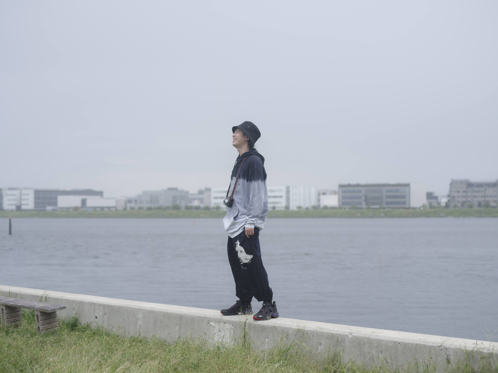

森川 亮太
RYOHTA MORIKAWA / M.RYOHTA
写真撮影・映像演出・制作進行
新卒で民放テレビ局に就職し、報道分野の映像エディターとして従事。
2020年に退職し、写真家・青山裕企に弟子入り。
2022年に個展「偶像憧憬」をもって独立し、フリーランスのフォトグラファー・映像ディレクターとして活動を始める。
同時期に、クリエイティブディレクター・小西利行、映像ディレクター・東市篤憲が運営するコミュニティの運営に携わりながら、広告・MVの基礎について学び、映像制作のキャリアを重ねる。
現在は芸能分野の人物撮影を主な生業としており、CMやMV、ドラマや映画など様々なジャンルで撮影を行っている。
得意ジャンルはメイキング・ドキュメンタリー撮影。
CONTACT
写真撮影、映像演出（MV・ドキュメンタリー）、制作進行のご依頼・ご相談は、メールでお気軽にお問い合わせください。
m.ichirinka@gmail.comご相談内容、撮影・制作の希望時期、ご予算などをお知らせいただけると、ご案内がスムーズです。